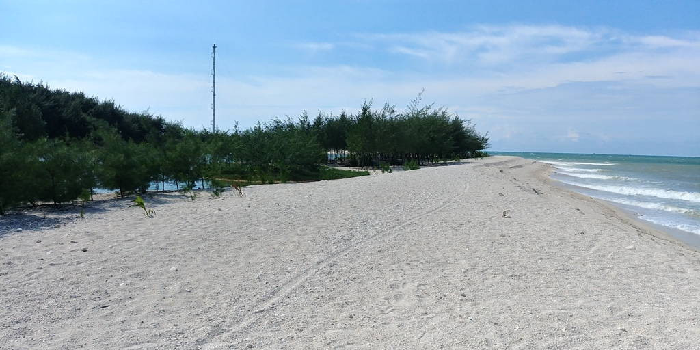

Tempat Tinggal yang Nyaman
Saya tinggal di desa Remen, sebuah tempat yang indah dan penuh dengan suasana pedesaan yang damai.
Kenapa Saya Suka Tinggal di Desa?
- Udara yang segar dan jauh dari polusi.
- Lingkungan yang hijau dengan pemandangan alami.
- Warga yang ramah dan saling membantu satu sama lain.
- Suasana yang tenang, cocok untuk bekerja atau bersantai.